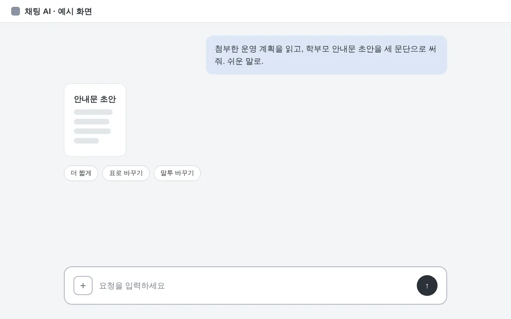

오늘의 흐름
50분 가운데 실습 20분이 가장 깁니다
- 개념 맞추기
프롬프트라는 말
- 좋은 요청과 나쁜 요청
두 요청 견주기
- 따라 하기
세 걸음으로 쓰기
- 실습
내 문서로 써 보기
- 정리
세 줄 요약
01 개념 맞추기
먼저 프롬프트라는 말부터 맞춥니다
- 프롬프트AI에게 건네는 요청문
-
무엇을, 누구를 위해, 어떤 모양으로 쓸지 AI에게 알려 주는 글입니다.
- 가정통신문 초안을 학부모 눈높이로 써 줘
- 회의록을 결정 사항 세 줄로 줄여 줘
02 좋은 요청과 나쁜 요청
두 요청은 세 가지 기준에서 갈립니다
막연한 요청
분명한 요청
읽을 사람적지 않음
학부모 · 학생 · 동료 중 하나
근거 자료없이 맡김
계획서 · 설문을 붙임
결과 모양정하지 않음
세 문단 · 표 · 목록으로 정함
03 따라 하기
요청문은 네 단계로 다듬습니다
- 읽을 사람 적기
학부모 · 학생 · 동료 가운데 누구인지
- 자료 붙이기
계획서 · 설문 · 회의록, 개인정보는 지우고
- 모양 정하기
문단 · 표 · 목록과 분량
- 초안 다시 읽기
사실과 숫자를 원문과 대조
03 따라 하기 · 화면
대화창에서는 세 곳만 보면 됩니다

- 자료 붙이기+ 단추로 문서를 첨부
- 요청 쓰기누구에게 · 무엇으로 · 어떤 모양
- 다시 다듬기더 짧게, 표로, 말투 바꾸기
04 실습 · 20분
요청문을 쓰면서 네 가지를 확인합니다
- 읽을 사람과 말투를 적었다
- 근거 자료를 붙였다개인정보는 지우고
- 분량과 형식을 정했다
- 받은 초안의 숫자를 원문과 대조했다가장 중요
05 정리 · 지난 연수 결과
15분
초안 한 건을 쓰는 데 걸린 시간
- 연수 전 평균 40분
- 다시 요청한 횟수는 문서당 2회
자료: ○○교육청 교육연수원 수료자 설문(가상 예시)
05 정리
오늘 배운 것은 세 줄입니다
- 누구에게
읽을 사람과 말투를 먼저 적는다
- 무엇으로
근거 자료를 붙이고 개인정보는 지운다
- 어떤 모양으로
분량과 형식을 정하고, 받은 초안은 꼭 다시 읽는다
오늘 쓴 요청문을
내일 업무에
문의 · ○○교육청 교육연수원 연수 담당